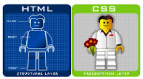

Introdução Sistemas Multimídia
Created by Fernando Marques
Introdução
- O que são sistemas multimídia?
- Computação permite criar produtos interativos e personalizados
- Não só páginas Web, mas aplicativos Web
- Realidade aumentada teve inicio no Pokemon Go
- TV Digital, Netflix, YouTube...
- Infelizmente Ginga foi descontinuado
Tipos de Produto Multimídia
- Podem ser classificados pelo grau de interatividade
- Documentos - Páginas Estáticas
- Aplicativos - Google Maps, Gimp Online
- Streaming - YouTube e NetFlix
- Web 2.0 fornece mais recursos para a reprodução de sistemas multimídia
Vantagens
- Conseguimos personalizar mais os conteúdos
- Novos conteúdos são gerados para todas preferências
Desvantagens
- Nem todos tem acesso a banda larga
- Operadoras não veem streaming com bons olhos
- Morte da TV a Cabo clássica?
HTML
- HyperText Markup Language
- Cada elemento (tag) representa um conteúdo de documento
- Versão Atual: HTML5
- Utilizada tanto para interface de dispositivos móveis como aplicações Web
- HTML é entendido pelo navegador que mostra os conteúdos
- Apesar de padronização do html, ainda há diferença na exibição: html5 color
- Eu preparo essas aulas apenas com html
<!DOCTYPE html>
<html>
<body>
<h1>My First Heading</h1>
<p>My first paragraph.</p>
</body>
</html>
CSS
- Cascading Style Sheet
- Define COMO uma página vai ser exibida
- Podemos utilizar o mesmo css para diversas páginas
- Imagina o trabalho se não tivesse o css...
- Eu praticamente não edito os css!
/* comentário em css, semelhante aos da linguagem c */
body
{
font-family: Arial, Verdana, sans-serif;
background-color: #FFF;
margin: 5px 10px;
}
Javascript
- Podemos considerar o javascript como a linguagem da web
- Permite configurar o comportamento da página
- Frameworks: jQuery
- Apesar de ter sido criado como linguagem client-side, já funciona como server-side (node.js)
- Nessa apresentação, o js controla as passagens de slide e algumas outras funcionalidades
<!DOCTYPE html>
<html>
<body>
My First Web Page
My first paragraph.
<script>
window.alert(5 + 6);
</script>
</body>
</html>
Ou Seja

- HTML: Conteúdo que é apresentado
- CSS: Forma que é apresentado
- JavaScript: Comportamento
- Serve-Side: Banco de dados e etc
Ferramentas Necessárias
- Editor de código
- Navegador
- Mais nada, nem mesmo internet!